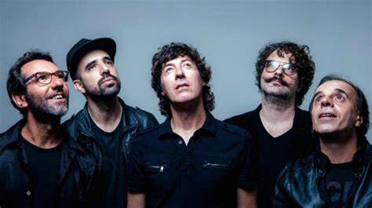
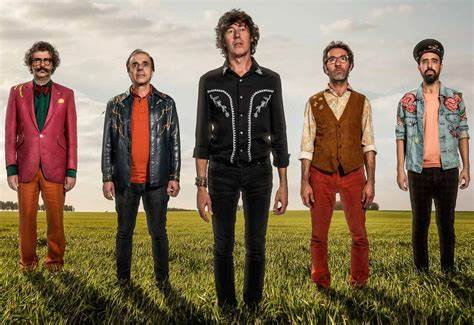

CUARTETO DE NOS
Es una banda de rock uruguaya formada en Montevideo en 1984. Está integrada por el cantante y guitarrista Roberto Musso, el baterista Álvaro Pintos, el guitarrista y corista Gustavo Antuña y el bajista y tecladista Santiago Marrero.
Son reconocidos por sus trabajos musicales como “Soy una arveja”, “Emilio García”, “Otra Navidad en las trincheras”, “El tren bala” y “Raro”. A lo largo de su carrera, han experimentado con varios géneros musicales, incluyendo rock alternativo y rap rock, con elementos de pop y electrónica.
A lo largo de su carrera, han experimentado con varios géneros musicales, incluyendo rock alternativo y rap rock, con elementos de pop y electrónica.
A lo largo de los años, han generado cierta polémica debido a sus letras políticamente incorrectas y su humor negro, reflejado en canciones como “La pequeña Leti”, “Pegame y decime Shirley”, “Maten las ballenas” y "Cristo te odia".

